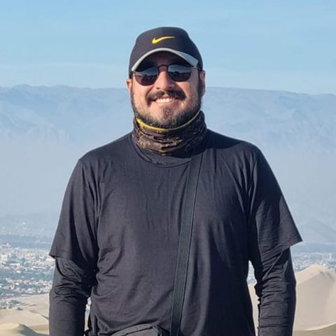

Geographer · MSc in Geoinformatics
Geographer from Universidade Federal Fluminense and MSc in Geoinformatics (joint degree, Palacký University Olomouc & Paris Lodron University of Salzburg). Over five years of GIS work in Brazil and Portugal — from land administration and municipal planning to drone surveys — and a focus on cartographic design and interactive 3D geovisualization.
Palacký University Olomouc (UPOL) & Paris Lodron University Salzburg (PLUS)
Copernicus Master in Digital Earth — GeoVisualization specialization.
Thesis: data-driven wildfire spread modeling and interactive 3D geovisualization using Unity3D, NASA FIRMS VIIRS satellite data, and Cesium, across five global case-study areas.
Sep 2024 – Sep 2026
USP/Esalq
Applied statistics, machine learning, and analytics coursework alongside full-time GIS work.
Oct 2022 – Aug 2024
Estácio
Software development fundamentals — programming, databases, and systems analysis — building the technical base behind the geospatial automation and app development work below.
Dec 2021 – Mar 2024
Universidade Federal Fluminense
Focused on physical and human geography, remote sensing, spatial analysis and cartographic tools.
2015 – 2021
Geotrilho — Barreiro, Portugal
Hands-on fieldwork with drone and ground-based (TLS) survey data, photogrammetry processing in Agisoft Metashape, and 3D modeling in 3DReshaper for infrastructure planning.
Jul 2025 – Aug 2025
Imagem Geosistemas — Rio de Janeiro, Brazil
Produced and maintained cartographic and geospatial datasets in ArcGIS Pro for infrastructure and land-administration projects; organized and validated spatial databases against client specifications and deadlines.
Apr 2023 – Aug 2024
Imagem Geosistemas — Brazil
Assisted senior technicians with map production, data digitizing, and quality control across multiple concurrent GIS projects.
Jan 2022 – Apr 2023
Instituto Municipal Pereira Passos — Prefeitura do Rio de Janeiro
Contributed to municipal urban-planning GIS projects, supporting spatial data collection, mapping, and analysis for city-level infrastructure initiatives.
May 2019 – May 2021
IBGE — Rio de Janeiro, Brazil
Supported national geography and cartography operations, working with geospatial datasets and statistical mapping standards.
Dec 2017 – May 2019
Universidade Federal Fluminense
Teaching assistant for Remote Sensing classes. Supported students with imagery interpretation and practical GIS exercises.
Mar 2018 – Dec 2018